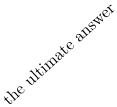
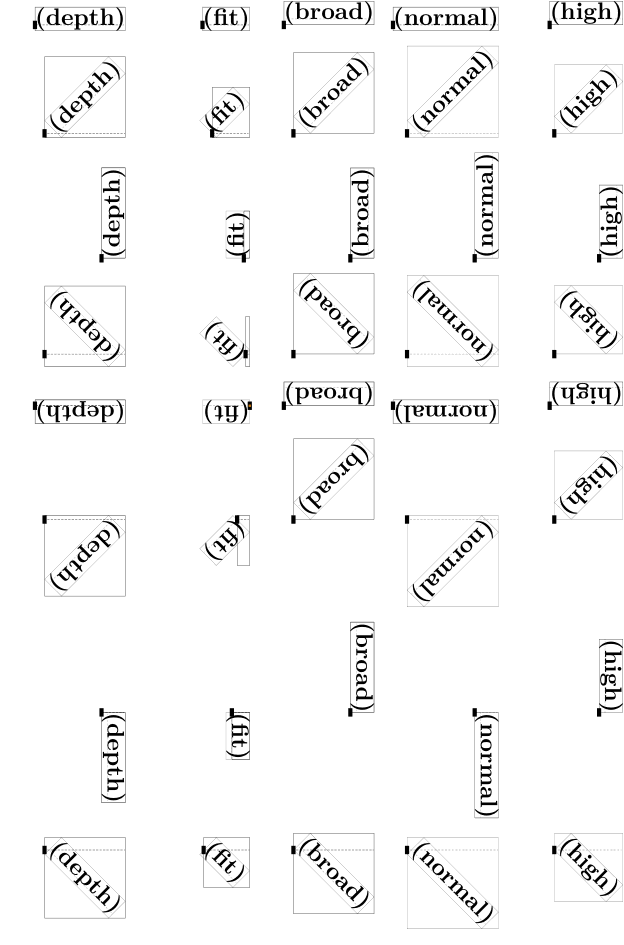
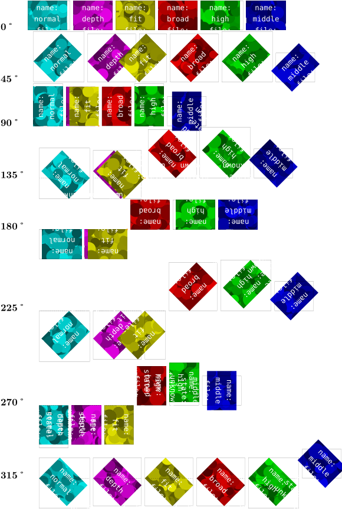
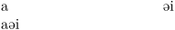
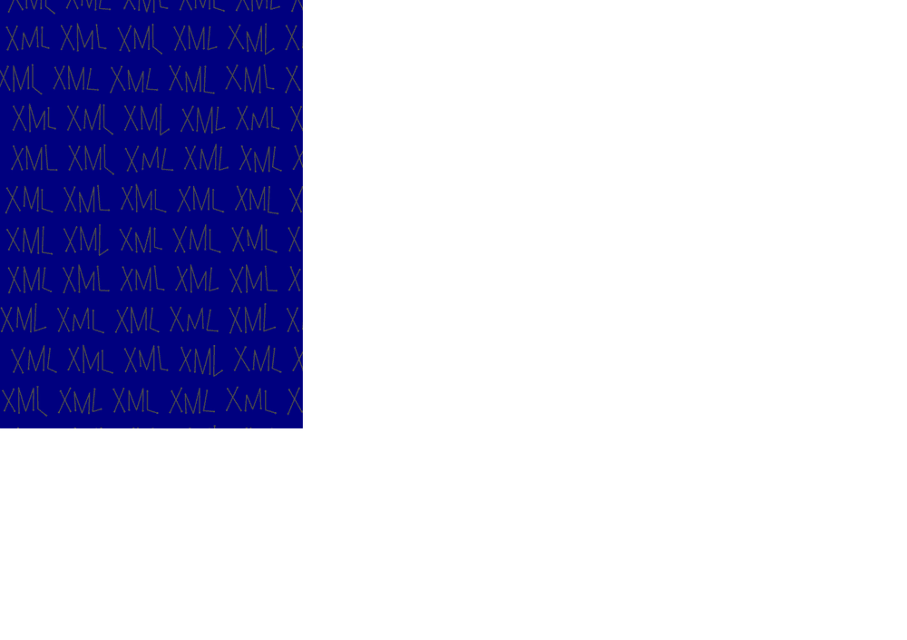

You can use the commands for text, but also for graphics or other “building blocks”.
Contents
Scaling
The \scale command is all-purpose, you can scale by factors or to a defined size.
As a special case, you can insert symbols at a reduced size in the text flow using \getscaledglyph.
-
\getscaledglyph{.5}{Serif}{a} a \getscaledglyph{2}{Serif}{a}
Mirroring
-
There is a \mirror{\sl mirorred} {\sl word} in this sentence.
\mirror makes a \hbox and mirrors the contents. If you want to have a longer paragraph mirrored, you have to make a \vbox manually.
-
\mirror{\vbox{Alice was beginning to get very tired of sitting by her sister on the bank, and of having nothing to do: once or twice she had peeped into the book her sister was reading, but it had no pictures or conversations in it, \quote{and what is the use of a book,} thought Alice \quote{without pictures or conversation?}}}
Rotating
You can \rotate something by an arbitrary angle like
-
\rotate[rotation=42]{the ultimate answer}
- 
The rotation angle and the location (which determines around which point the content is rotated) are optional and can also be set by
-
\setuprotate[rotation=42,location=normal] % normal is the default \rotate{the ultimate answer}
-

-
\ss Next generation L\rotate{m}\rotate{m}TSP\mirror{3}Al\rotate[rotation=270,location=high]{v}?
You can rotate a long paragraph as well.
Location parameter
The influence of location= at different angles:
-
\dostepwiserecurse{0}{359}{45} {\startlinecorrection[blank] \hbox {\expanded{\setuprotate[rotation=\recurselevel]}% \traceboxplacementtrue \hbox to .2\hsize{\hss\ruledhbox{\rotate[location=depth] {\ruledhbox{\bfb (depth)}}}}% \hbox to .2\hsize{\hss\ruledhbox{\rotate[location=fit] {\ruledhbox{\bfb (fit)}}}}% \hbox to .2\hsize{\hss\ruledhbox{\rotate[location=broad] {\ruledhbox{\bfb (broad)}}}}% \hbox to .2\hsize{\hss\ruledhbox{\rotate[location=normal]{\ruledhbox{\bfb (normal)}}}}% \hbox to .2\hsize{\hss\ruledhbox{\rotate[location=high] {\ruledhbox{\bfb (high)}}}}} \stoplinecorrection}
- 
Rotating Figures
The following code shows how the location parameter influences rotation with a frame:
\setupbodyfont[sans, 30pt] \setuppagenumbering[location=,] \showframe \starttext \topskip4cm \dostepwiserecurse{0}{360}{10}{ \doloopoverlist{normal,default,depth,fit,broad,high,middle}{ \ruledhbox{\rotate[rotation=\recurselevel, location=\recursestring]{% \framed [width=\textheight, height=\textwidth, rulethickness=5pt, depth=0cm, foregroundstyle=\bfd] {\recursestring, \recurselevel°} } } } } \stoptext
or, even nicer:
-
\useMPlibrary[dum] \setupexternalfigures[width=4em,height=3em,frame=on,] \dostepwiserecurse{0}{359}{45}{{\bf\recurselevel˚}\quad \doloopoverlist{normal,depth,fit,broad,high,middle}{ \dontleavehmode\ruledhbox{% \rotate[rotation=\recurselevel, location=\recursestring]{% \externalfigure[\recursestring] }% }% }\par }
- 
In a box
Depending on the usage you will sometimes probably want to include the content of what you wish to rotate into a box. Compare the following two examples:
-
\setuplayout[width=3cm] \setuprotate[rotation=180,location=broad] a\rotate{e}i\par a\rotate{\hbox{e}}i
- 
Page dependent landscape figures
Sometimes, in a double-sided portrait document, you may wish to rotate a landscape figure so that the top is towards the spine of the book – no matter whether it’s on an odd or even page. In this case the \doifoddpageelse command can help:
\rotate[rotation=\doifoddpageelse{90}{270}]{\externalfigure[cow]}
This example is by Wolfgang, from the thread starting here. The thread contains other solutions to the problem.
Clipping
You can adjust the size of an element by cropping/clipping its borders:[1]
-
\clip[nx=3,ny=3,x=1,y=1]{\externalfigure[cow]}
-
\definedfont[SansBold at 20mm] \baselineskip 0pt % switch off the space between the stripes \lineskip 0pt \def\MyLogo{\vbox{\hbox{\CONTEXT}\null}} % null is necessary for the whole bounding box \clip[ny=3,y=1]{\color[yellow]{\MyLogo}} \clip[ny=3,y=2]{\color[orange]{\MyLogo}} \clip[ny=3,y=3]{\color[red]{\MyLogo}}
And here’s how to cut out a piece by measures (see also \setupclipping and \clip):
-
\clip[width=3cm, height=1cm, hoffset=1cm, voffset=5mm]{\externalfigure[cow][width=5cm]}
Further reading
Graphic transformations are implemented in grph-trf.mkiv and grph-trf.lua.
Footnotes
-
↑
Please, don’t forget that clipping only displays a part of an image. At least when this comes from a PDF document, the whole page has to be included, although only part of it is displayed.
The PDF output from the following sample containshans hagen, pragma ade. Depending on your PDF viewer, you may be able to search for it.
Of course, you will have to compile the source yourself, since the wiki will only contains PNG images from compilations.-
\setuppapersize[A5, landscape] \setuplayout[page] \starttext \clip[nx=3,ny=3,x=1,y=1]{\externalfigure[xml-mkiv.pdf]} \stoptext
- 
-